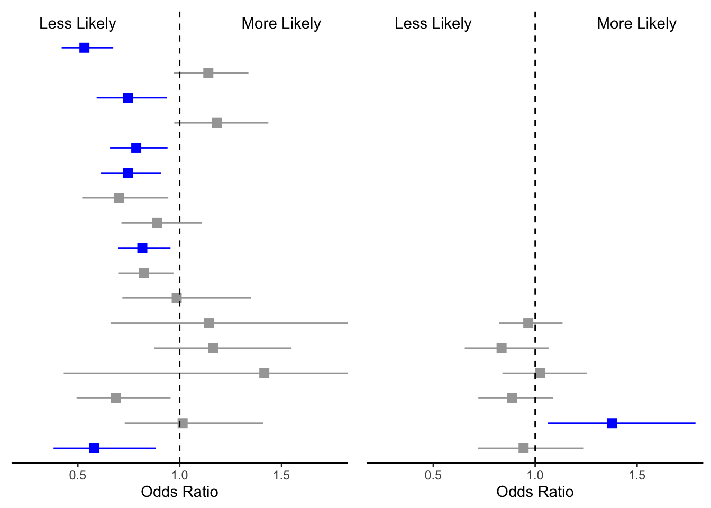
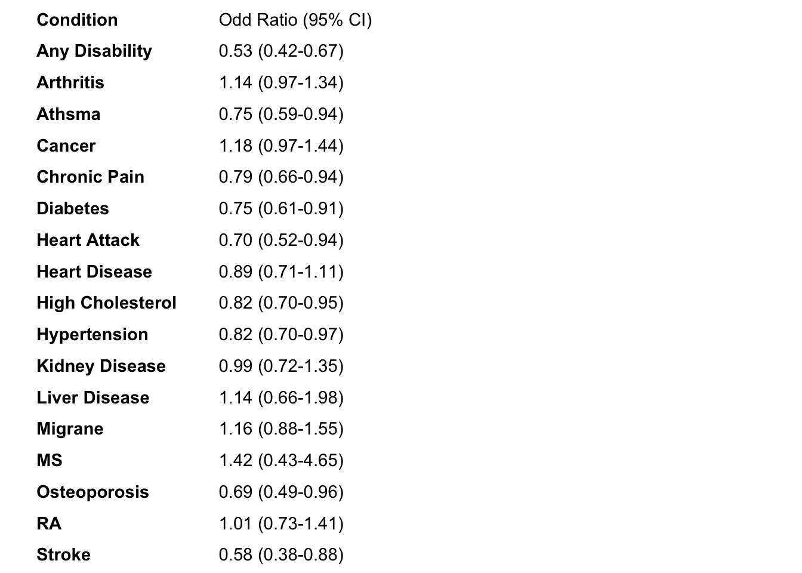
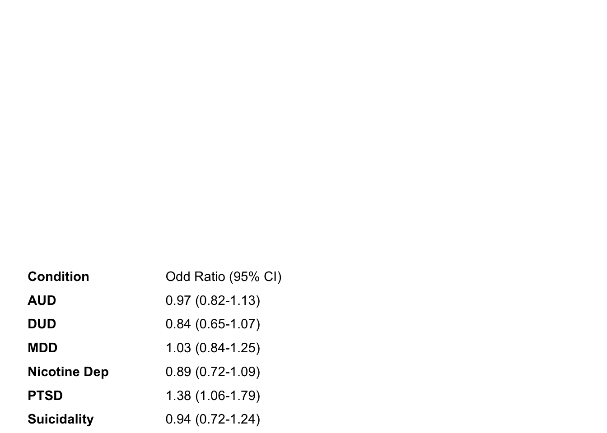
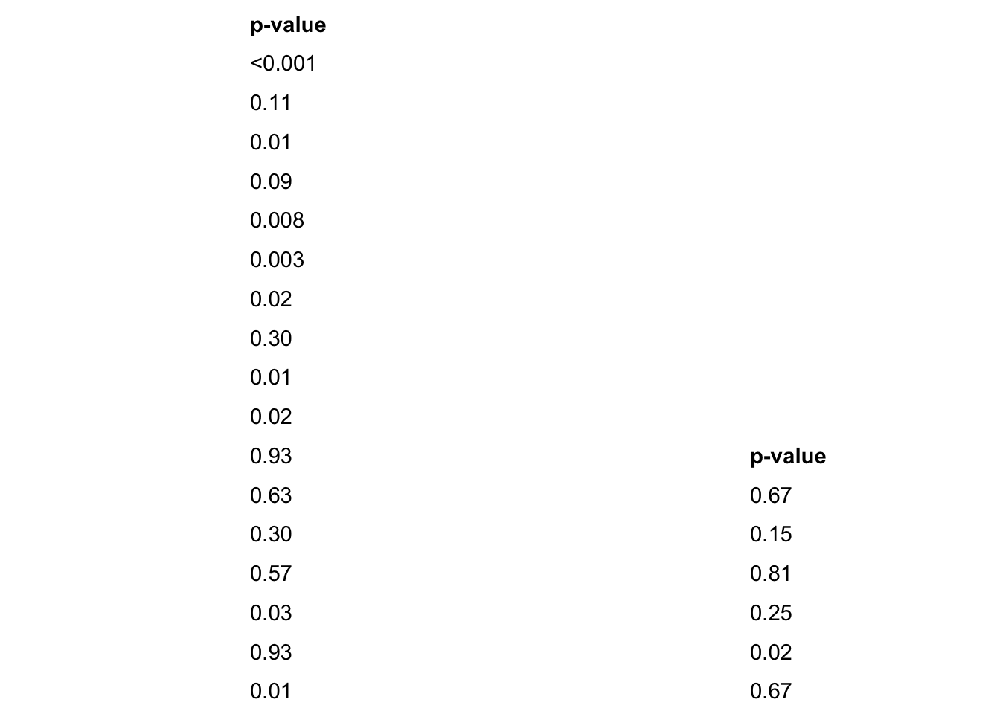

Thesis Forrest Plots
The following code will show you how I created my forrest plots for my thesis. This page includes:
- Load in the data, seperate data into respective data frames for univariate and multivariate analysis.
- Creating variables to to order the health conditions in the plot and indicate which health conditions are statistically significant.
- Create Forrest plots.
- Create plot of health condition names and respective ORs and 95% CIs
- Create plot of p values for respective health conditions.
- Put together all of the plots
- Report results of regressions
## load up the packages we will need:
library(tidyverse)
library(dplyr)
library(gt)
# for putting ggplots together
library(patchwork)
# for reordering facctors in ggplot
library(forcats)
library(kableExtra)
options(knitr.table.format = "html") Import and Prep Data
First thing to do is to load the data into R. I have already created tables with all of the values needed for these plots.
#### Univariate regressions
Ins_Mod_Uni <- read_csv("~/Desktop/Coding/data/Ins_Mod_Uni.csv")
Ins_Act_Uni <- read_csv("~/Desktop/Coding/data/Ins_Act_Uni.csv")
Act_Mod_Uni <- read_csv("~/Desktop/Coding/data/Act_Mod_Uni.csv")
#### With Covariates
Ins_Mod <- read_csv("~/Desktop/Coding/data/Ins_Mod.csv")
Ins_Act <- read_csv("~/Desktop/Coding/data/Ins_Act.csv")
Act_Mod <- read_csv( "~/Desktop/Coding/data/Act_Mod.csv")Example of data frame
knitr::kable(Ins_Mod[1:5,]) %>%
kable_styling(bootstrap_options = c("striped", "hover", "condensed"))| variable | statistic | estimate | conf.low | conf.high | ci | p.value | r2_change |
|---|---|---|---|---|---|---|---|
| Any Disability | 0.4715806 | 0.6240152 | 0.4757883 | 0.8184206 | 0.62 ( 0.48 - 0.82 ) | 0.0006542 | 0.65 % |
| Arthritis | 0.0253985 | 0.9749213 | 0.8073022 | 1.1773430 | 0.97 ( 0.81 - 1.18 ) | 0.7918852 | 0.03 % |
| Athsma | 0.3406594 | 0.7113011 | 0.5391411 | 0.9384357 | 0.71 ( 0.54 - 0.94 ) | 0.0159802 | 0.16 % |
| Cancer | 0.0207705 | 0.9794437 | 0.7767423 | 1.2350427 | 0.98 ( 0.78 - 1.24 ) | 0.8606351 | 0.04 % |
| Chronic Pain | 0.3167564 | 0.7285082 | 0.5875666 | 0.9032579 | 0.73 ( 0.59 - 0.9 ) | 0.0038836 | 0.25 % |
Because ggplot() likes to sort things based upon its own
“standards” we need to create a variable (i.e., order) and manually
assign the order that we want the plot and values to be in.
Additionally, I wanted to assign a variable that indicates which ORs
were significant after alpha corrections, so I created a variable (i.e.,
sig) that we can use to color the significaant values later on. I used
mutate() to create new variables and then manually assign
the vlaues for each condition.
#create the variable within the dataframe
Ins_Mod <- mutate(Ins_Mod, order = 0)
#update the values of the dataset to reflect the order we want
Ins_Mod[1,9] = 2
Ins_Mod[2,9] = 3
Ins_Mod[3,9] = 4
Ins_Mod[4,9] = 5
Ins_Mod[5,9] = 6
Ins_Mod[6,9] = 7
Ins_Mod[7,9] = 8
Ins_Mod[8,9] = 9
Ins_Mod[9,9] = 10
Ins_Mod[10,9] = 11
Ins_Mod[11,9] = 12
Ins_Mod[12,9] = 13
Ins_Mod[13,9] = 14
Ins_Mod[14,9] = 15
Ins_Mod[15,9] = 16
Ins_Mod[16,9] = 17
Ins_Mod[17,9] = 18
Ins_Mod[18,9] = 19
Ins_Mod[19,9] = 20
Ins_Mod[20,9] = 21
Ins_Mod[21,9] = 22
Ins_Mod[22,9] = 23
Ins_Mod[23,9] = 24
# create a varaible for significance
Ins_Mod <- mutate(Ins_Mod, sig = 0)# assign values to the significant models post alpha corrections.
Ins_Mod[1,10] = 1
Ins_Mod[3,10] = 1
Ins_Mod[5,10] = 1
Ins_Mod[21,10] = 1We are going to split these conditions into a mental and physical
health dataframes. because ggplot() gets mad when we try to
arrange these all together. Here ou can see an example of the dataframe
with the order and significance.
phc_IM <- Ins_Mod[1:17,]
mhc_IM <- Ins_Mod[18:23,]
knitr::kable(phc_IM) %>%
kable_styling(bootstrap_options = c("striped", "hover"))| variable | statistic | estimate | conf.low | conf.high | ci | p.value | r2_change | order | sig |
|---|---|---|---|---|---|---|---|---|---|
| Any Disability | 0.4715806 | 0.6240152 | 0.4757883 | 0.8184206 | 0.62 ( 0.48 - 0.82 ) | 0.0006542 | 0.65 % | 2 | 1 |
| Arthritis | 0.0253985 | 0.9749213 | 0.8073022 | 1.1773430 | 0.97 ( 0.81 - 1.18 ) | 0.7918852 | 0.03 % | 3 | 0 |
| Athsma | 0.3406594 | 0.7113011 | 0.5391411 | 0.9384357 | 0.71 ( 0.54 - 0.94 ) | 0.0159802 | 0.16 % | 4 | 1 |
| Cancer | 0.0207705 | 0.9794437 | 0.7767423 | 1.2350427 | 0.98 ( 0.78 - 1.24 ) | 0.8606351 | 0.04 % | 5 | 0 |
| Chronic Pain | 0.3167564 | 0.7285082 | 0.5875666 | 0.9032579 | 0.73 ( 0.59 - 0.9 ) | 0.0038836 | 0.25 % | 6 | 1 |
| Diabetes | 0.0758985 | 0.9269103 | 0.7434850 | 1.1555885 | 0.93 ( 0.74 - 1.16 ) | 0.4999199 | 0.14 % | 7 | 0 |
| Heart Attack | 0.1713558 | 0.8425218 | 0.6067336 | 1.1699417 | 0.84 ( 0.61 - 1.17 ) | 0.3063218 | 0.09 % | 8 | 0 |
| Heart Disease | 0.0079574 | 1.0079891 | 0.7860838 | 1.2925366 | 1.01 ( 0.79 - 1.29 ) | 0.9499866 | 0.03 % | 9 | 0 |
| High Cholesterol | 0.0467392 | 0.9543363 | 0.7934450 | 1.1478523 | 0.95 ( 0.79 - 1.15 ) | 0.6197807 | 0.11 % | 10 | 0 |
| Hypertension | 0.1922118 | 0.8251321 | 0.6813035 | 0.9993241 | 0.83 ( 0.68 - 1 ) | 0.0491967 | 0.09 % | 11 | 0 |
| Kidney Disease | 0.3995473 | 0.6706236 | 0.4459288 | 1.0085376 | 0.67 ( 0.45 - 1.01 ) | 0.0549679 | 0.06 % | 12 | 0 |
| Liver Disease | 0.2313079 | 1.2602472 | 0.6753648 | 2.3516519 | 1.26 ( 0.68 - 2.35 ) | 0.4673781 | < 0.01 % | 13 | 0 |
| Migrane | 0.0915372 | 1.0958575 | 0.7780282 | 1.5435221 | 1.1 ( 0.78 - 1.54 ) | 0.6004328 | < 0.01 % | 14 | 0 |
| MS | 0.2222351 | 1.2488650 | 0.2942241 | 5.3009391 | 1.25 ( 0.29 - 5.3 ) | 0.7631863 | < 0.01 % | 15 | 0 |
| Osteoporosis | 0.1113439 | 0.8946311 | 0.6168497 | 1.2975036 | 0.89 ( 0.62 - 1.3 ) | 0.5572189 | 0.08 % | 16 | 0 |
| RA | 0.1372672 | 1.1471346 | 0.7931358 | 1.6591330 | 1.15 ( 0.79 - 1.66 ) | 0.4659729 | < 0.01 % | 17 | 0 |
| Stroke | 0.1829380 | 0.8328198 | 0.5325163 | 1.3024742 | 0.83 ( 0.53 - 1.3 ) | 0.4226894 | 0.12 % | 18 | 0 |
knitr::kable(mhc_IM) %>%
kable_styling(bootstrap_options = c("striped", "hover"))| variable | statistic | estimate | conf.low | conf.high | ci | p.value | r2_change | order | sig |
|---|---|---|---|---|---|---|---|---|---|
| AUD | 0.0972906 | 1.1021807 | 0.9144631 | 1.3284322 | 1.1 ( 0.91 - 1.33 ) | 0.3071112 | 0.05 % | 19 | 0 |
| DUD | 0.1903044 | 0.8267075 | 0.6174507 | 1.1068822 | 0.83 ( 0.62 - 1.11 ) | 0.2012454 | 0.11 % | 20 | 0 |
| MDD | 0.0624167 | 1.0644058 | 0.8420967 | 1.3454034 | 1.06 ( 0.84 - 1.35 ) | 0.6015461 | 0.12 % | 21 | 0 |
| Nicotine Dep | 0.3460477 | 0.7074787 | 0.5502732 | 0.9095958 | 0.71 ( 0.55 - 0.91 ) | 0.0069547 | 0.21 % | 22 | 1 |
| PTSD | 0.0827565 | 1.0862773 | 0.7906727 | 1.4923979 | 1.09 ( 0.79 - 1.49 ) | 0.6095891 | 0.02 % | 23 | 0 |
| Suicidality | 0.0394350 | 1.0402229 | 0.7574763 | 1.4285116 | 1.04 ( 0.76 - 1.43 ) | 0.8074875 | 0.07 % | 24 | 0 |
Now we have a data frame for physical health conditions and a data frame for mental health conditions. We will repeat these steps for the other 2 full models, and the 3 univariate models.
Middle: Create The Plot
Now that we have the data all ready, we can create the plot. I am
creating a function below called mid_Fplot() that will
allow me to make the 6 forrest plots by calling the function instead of
manually making every one. We create Forrest plots using
ggplot() and using
geom_point() + geom_linerange(). I waanted to signify which
values were statistically significant after alpha corrections, so I used
color = & scale_color_manual() to make the
significant ones blue. For the forrest plot I am going to save the
output of the plot into “phc_IA_mid”.
Forrest Plot Function
mid_Fplot <-function(data){
output <- data |>
#Plot the value variable (in descending order) assigning significance to the
#values significant after Bon foroni alpha corrections
ggplot(aes(y = reorder(variable, -order),color = as.factor(sig))) +
#take away background
theme_classic() +
#make the forrest plot
geom_point(aes(x=estimate), shape=15, size=3,show.legend = FALSE) +
geom_linerange(aes(xmin=conf.low, xmax=conf.high),show.legend = FALSE) +
#add color
scale_color_manual(values = c("#A6A6A6","blue"))+
#change Cordinates
labs(x="Odds Ratio") +
#adjust the dimentions.
coord_cartesian(ylim = c(1,18), xlim=c(.25, 1.75)) +
#add a line at 0 for reference
geom_vline(xintercept = 1, linetype="dashed") +
#add anotations to help suggests what each side means.
annotate("text", x = .5, y = 18, label = "Less Likely") +
annotate("text", x = 1.5, y = 18, label = "More Likely") +
#Git rid of the Y - Axis
theme(axis.line.y = element_blank(),
axis.ticks.y= element_blank(),
axis.text.y= element_blank(),
axis.title.y= element_blank())
return (output)
}Applying the function
As we separated the datasets into mental health and physical health data frames, we can just call one function to do both parts of the plots.
#Physical Health Conditions Insufficient vs active
phc_IA_mid<-mid_Fplot(phc_IA)
#Mental Health Conditions Insffucient vs active
mhc_IA_mid<- mid_Fplot(mhc_IA)No repeat this for the other 10 plots.
# Insufficient vs Moderate Multi
phc_IM_mid <- mid_Fplot(phc_IM)
mhc_IM_mid <- mid_Fplot(mhc_IM)
# Active vs Moderate Muli
phc_AM_mid <- mid_Fplot(phc_AM)
mhc_AM_mid <- mid_Fplot(mhc_AM)
##### Univariate
phc_IA_Uni_mid<-mid_Fplot(phc_IA_Uni)
mhc_IA_Uni_mid<- mid_Fplot(mhc_IA_Uni)
phc_IM_Uni_mid <- mid_Fplot(phc_IM_Uni)
mhc_IM_Uni_mid <- mid_Fplot(mhc_IM_Uni)
phc_AM_Uni_mid <- mid_Fplot(phc_AM_Uni)
mhc_AM_Uni_mid <- mid_Fplot(mhc_AM_Uni)We have our plots! We can interpret this as, “Compared to veterans who were are insufficient active, veterans who were moderately active were (less/no difference/more) likely to report X health condition.” For these figures the blue lines indicate which health conditions are significant after alpha corrections.
ggpubr::ggarrange(phc_IA_mid,mhc_IA_mid, ncol =2, nrow =1)
We have physical health on the left side and mental conditions on the right. You may be asking yourself, Where is the Y axis? I removed the Y axis for both plots so I could manually add the variable names and the odds ratios in the next step.
Left Side: labels and ORs
We took away the standard y axis of GGplot because it is simplistic. Now we are now going to add a Y axis that includes the variable names (i.e., Health Conditions) and their respective ORs.
Update data frame
The output from the statistical models (e.g., p values) is not
rounded to clean numbers. The code below tidy’s up our data and creates
new values. Additionally our table has seperate values for OR, and 95%
CI. The code below creates a function called DF_update()
that combines these values into one variable so we can call it for the
table.
DF_update <- function(data){
#assign the input and output of the data
output <-data |>
# round estimates and 95% CIs to 2 decimal places for journal specifications
mutate(across(
c(estimate, conf.low, conf.high),
~ str_pad(
round(.x, 2),
width = 4,
pad = "0",
side = "right"
)
),
# add an "-" between HR estimate confidence intervals
estimate_lab = paste0(estimate, " (", conf.low, "-", conf.high, ")")) |>
# round p-values to two decimal places, except in cases where p < .001
mutate(p.value = case_when(
p.value < .001 ~ "<0.001",
round(p.value, 2) == .05 ~ as.character(round(p.value,3)),
p.value < .01 ~ str_pad( # if less than .01, go one more decimal place
as.character(round(p.value, 3)),
width = 4,
pad = "0",
side = "right"
),
TRUE ~ str_pad( # otherwise just round to 2 decimal places and pad string so that .2 reads as 0.20
as.character(round(p.value, 2)),
width = 4,
pad = "0",
side = "right"
)
)) |>
# add a row of data that are actually column names which will be shown on the plot in the next step
bind_rows(
data.frame(
variable = "Condition",
estimate_lab = "Odd Ratio (95% CI)",
conf.low = "",
conf.high = "",
p.value = "p-value"
)
) |>
mutate(model = fct_rev(fct_relevel(variable, "Condition")))
# have the funciton spit out the new data
return(output)
}Now that we have made a function, lets see what it does.
# Insufficient vs Active
phc_IA_plot <- DF_update(phc_IA)
#double check to make sure it worked.
glimpse(phc_IA_plot$estimate_lab)## chr [1:18] "0.53 (0.42-0.67)" "1.14 (0.97-1.34)" "0.75 (0.59-0.94)" ...Now we can use DF_update() to update the rest of the
data frames.
mhc_IA_plot <- DF_update(mhc_IA)
# Insufficient vs moderate
phc_IM_plot <- DF_update(phc_IM)
mhc_IM_plot <- DF_update(mhc_IM)
# active vs moderate
phc_AM_plot <- DF_update(phc_AM)
mhc_AM_plot <- DF_update(mhc_AM)
### Univaraite
phc_IA_Uni_plot <- DF_update(phc_IA_Uni)
mhc_IA_Uni_plot <- DF_update(mhc_IA_Uni)
phc_IM_Uni_plot <- DF_update(phc_IM_Uni)
mhc_IM_Uni_plot <- DF_update(mhc_IM_Uni)
phc_AM_Uni_plot <- DF_update(phc_AM_Uni)
mhc_AM_Uni_plot <- DF_update(mhc_AM_Uni)Plotting the left side
Now that we have the variables int he format for the plot, we can
plot them! I create the function left_FP() that plots all
of the variables on the same axis as the forrest plot above. This allows
us to add the varaibles and the respective Odds Ratios / Confideince
intervals.
left_FP <- function(plot_data,type){
# For Physical health condition plots
if(type == "PHC") {
# add the top row
plot_data<-mutate(plot_data, top_row = 0)
plot_data[18,9] = 1
plot_data <- arrange(plot_data,order)
# plot the left side of the plot
output <- plot_data %>%
ggplot(aes(y = model)) +
geom_text(aes(x = 0, label = variable), hjust = 0, fontface = "bold")+
geom_text(
aes(x = 1, label = estimate_lab),
hjust = 0,
fontface = ifelse(phc_IA_plot$estimate_lab == "Odds Ratio (95% CI)", "bold","plain")) +
theme_void() +
coord_cartesian(ylim = c(1,18), xlim = c(0, 4))
}
# For Mental health condition plots
if(type == "MHC"){
#arange the labels on top
plot_data<-mutate(plot_data, top_row = 0)
plot_data[7,9] = 1
plot_data <- arrange(plot_data,order)
# plot the left side of the plot
output <- plot_data %>%
ggplot(aes(y = model)) +
geom_text(aes(x = 0, label = variable), hjust = 0, fontface = "bold")+
geom_text(aes(x = 1, label = estimate_lab),
hjust = 0,
fontface = ifelse(mhc_IA_plot$estimate_lab == "Odds Ratio (95% CI)", "bold","plain")) +
theme_void() +
coord_cartesian(ylim = c(1,18), xlim = c(0, 4))
}
return(output)
}Run left_FP for multivariate and univariate plots.
# Multivariate
phc_IA_left<-left_FP(phc_IA_plot,"PHC")
mhc_IA_left<-left_FP(mhc_IA_plot,"MHC")
phc_IM_left<-left_FP(phc_IM_plot,"PHC")
mhc_IM_left<-left_FP(mhc_IM_plot,"MHC")
phc_AM_left<-left_FP(phc_AM_plot,"PHC")
mhc_AM_left<-left_FP(mhc_AM_plot,"MHC")
# Univariate
phc_IA_Uni_left<-left_FP(phc_IA_Uni_plot,"PHC")
mhc_IA_Uni_left<-left_FP(mhc_IA_Uni_plot,"MHC")
phc_IM_Uni_left<-left_FP(phc_IM_Uni_plot,"PHC")
mhc_IM_Uni_left<-left_FP(mhc_IM_Uni_plot,"MHC")
phc_AM_Uni_left<-left_FP(phc_AM_Uni_plot,"PHC")
mhc_AM_Uni_left<-left_FP(mhc_AM_Uni_plot,"MHC")Now we have our labels. In our labels we have the name of our conditions and the OR + 95 CI.
phc_IA_left 
mhc_IA_left
Right: P values
We now have the left side and the middle of the plot. The last thing
we need is to show the P values on the right side of the table. We have
already updated our data frame (above) so now we can just put them in
the figure like how we did for the left side. I create the function
right_FP() that plots all of the p values on the same y
axis as the two plot types above.
right_FP<-function(plot_data){
output <- plot_data |>
ggplot() +
geom_text(aes(x = 0, y = model, label = p.value), hjust = 0,
fontface = ifelse(plot_data$p.value == "p-value", "bold", "plain")) +
theme_void() +
coord_cartesian(ylim = c(1,18))
return(output)
}run left_FP()
#. Multivaraite
phc_IA_right <- right_FP(phc_IA_plot)
mhc_IA_right <- right_FP(mhc_IA_plot)
phc_IM_right <- right_FP(phc_IM_plot)
mhc_IM_right <- right_FP(mhc_IM_plot)
phc_AM_right <- right_FP(phc_AM_plot)
mhc_AM_right <- right_FP(mhc_AM_plot)
# Univaraite
phc_IA_Uni_right <- right_FP(phc_IA_Uni_plot)
mhc_IA_Uni_right <- right_FP(mhc_IA_Uni_plot)
phc_IM_Uni_right <- right_FP(phc_IM_Uni_plot)
mhc_IM_Uni_right <- right_FP(mhc_IM_Uni_plot)
phc_AM_Uni_right <- right_FP(phc_AM_Uni_plot)
mhc_AM_Uni_right <- right_FP(mhc_AM_Uni_plot)Example of the p value output
ggpubr::ggarrange(phc_IA_right,mhc_IA_right, ncol =2, nrow =1)
Putting It Together
We now have all of the pieces of the puzzle. Now we need to specify
how much area all of these individual parts will take up in the final
output. Below we specify where each of the individual plots starts and
finishes. t = top, l = left, b = bottom, r = right. We assign these to a
a vector (e.g.layout) for the plot. We are creating a data frame of
coordinates for the 3 different plot types to be plotted at using
patchwork::area().
layout <- c(
patchwork::area(t = 0, l = 0, b = 30, r = 25),
patchwork::area(t = 0, l = 14, b = 30, r = 25),
patchwork::area(t = 0, l = 23, b = 30, r = 30)
)Final Plot Arrangement
Combine all of the parts together to get the final product! We used
plot_layout() to combine all of the plots together using
the area cordinates specified using patchwork::area()
Here is an example of what the physical health and mental health plots look like ## Likelihood of reporting health conditions for veterans with sufficient physical activity compared to insufficient activity.
# physical health conditions. - Ins vs Mod
one <- phc_IA_left + phc_IA_mid + phc_IA_right + plot_layout(design = layout)
two <- mhc_IA_left + mhc_IA_mid + mhc_IA_right + plot_layout(design = layout)Repeat for the remaining plots
I struggled to figure out how to combine these two figures together
without ggplot() getting angery. So I used the forbidden
Illustrator to tidy up everything and combine
the univariate and multivariate plots. The final plots are below with
explinations of their results.
Explination of Results
knitr::include_graphics("~/Desktop/Coding/R working directory/plots/Ins_Act_FP.png")
Univariate. Those with several health conditions are less likely to report sufficiently active physical activity compared to insfucciently physical activity.
Multivariate. For less health conditions are there differences between physical activity level. Compared to veterans who are insufficiently active, those who are sufficiently active are less likely to report any disability, asthma, chronic pain, diabetes, and hypertension. No other differences were observed between the odds of reporting other conditions between insufficient and moderate activity.
Compared to veterans who are insufficiently active, those who are sufficiently active are more likely to report PTSD.
knitr::include_graphics("~/Desktop/Coding/R working directory/plots/Ins_Mod_FP.png")
Univariate. Similarily to sufficiently active, veterans tend who have health conditions are less likely to report moderate physical activity compared to those who are insuficiently active.
Multivariate. Compared to veterans who are insufficiently active, those who are moderately active are less likely to report any disability, asthma, chronic pain, diabetes, high cholesterol, and stroke. No other differences were observed between the odds of reporting other conditions between insufficient and moderate activity.
Compared to veterans who are insufficiently active, those who are moderately active are less likely to report nicotine dependence. No other differences were observed between the odds of reporting other conditions between insufficient and moderate activity.
knitr::include_graphics("~/Desktop/Coding/R working directory/plots/Mod_Act_FP.png") Univariate. For a few health coditions, veterans with those
conditions were more likely to report moderate activity compared to
sufficiently active. Multivariate. No other differences were
observed between the odds of reporting physical health conditions
between insufficient and moderate activity.
Univariate. For a few health coditions, veterans with those
conditions were more likely to report moderate activity compared to
sufficiently active. Multivariate. No other differences were
observed between the odds of reporting physical health conditions
between insufficient and moderate activity.